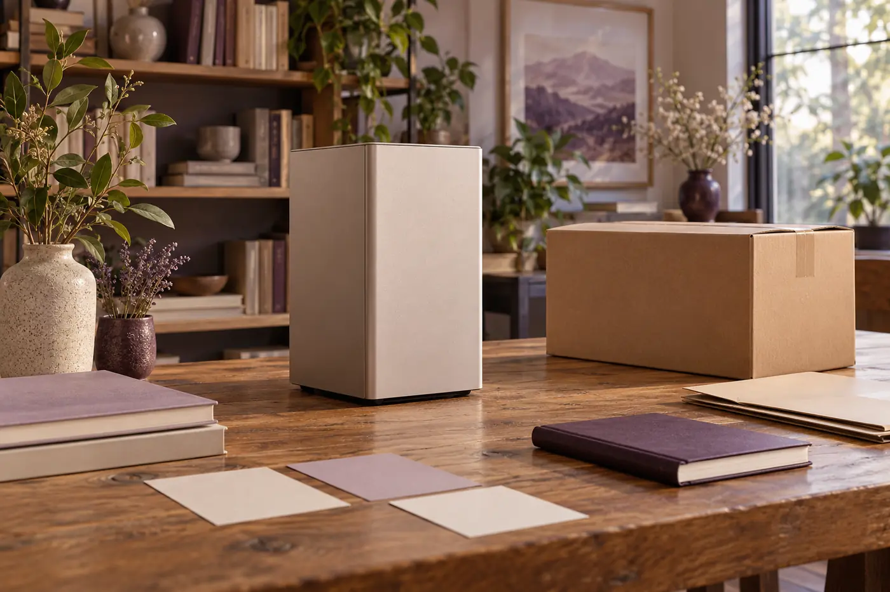
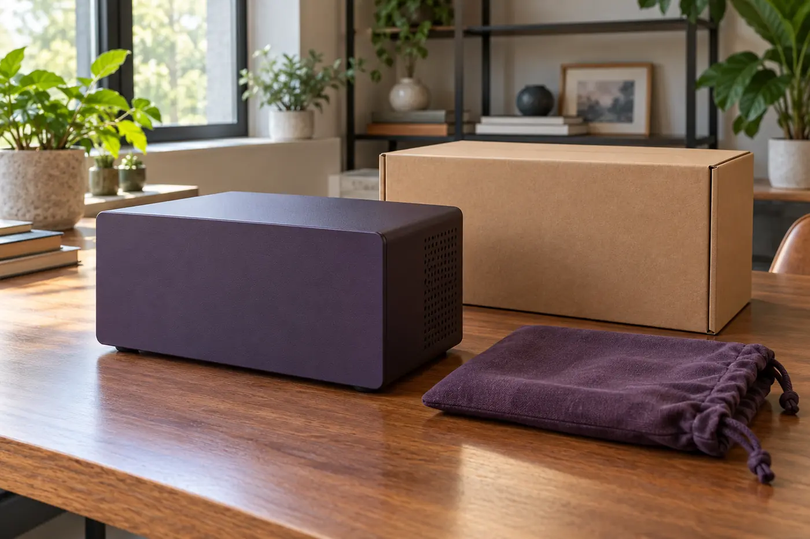

A desktop RAID shortlist should begin with the creative work it must support: application requirements, working capacity, collaboration arrangements and an independent backup plan. Put those needs beside dated vendor documents and name the person responsible for unresolved compatibility questions. An enclosure's appearance or advertised speed cannot establish a suitable workflow. This purchasing journal helps organize that evidence without claiming measured throughput, tested recovery, or protection against every way a studio can lose files.
This journal is a documentation exercise, not a device review or a laboratory report. Marcus Wren is an entirely fictional editorial voice. No enclosure shown here identifies tested RAID hardware. I have no measured throughput, recovery result or uptime evidence to offer. I can, however, make a shortlist harder to misunderstand, which is often the most useful first step in a studio purchase.
Start with a shortlist, then ask for its missing evidence
A product roundup can introduce the language used in the market. I would read this desktop RAID storage purchasing overview as a starting list of claims to investigate, not as proof that any listed configuration suits a particular studio. A description of capacity, connection speed or protection needs a matching document and a clearly stated scope before it becomes a reason to spend money.
I keep the first shortlist deliberately small. Beside each candidate I write the exact offered configuration, the task it might serve, the evidence still needed and the consequence of not getting that evidence. This makes an attractive but poorly documented option visibly incomplete rather than quietly equal to a well documented one. I do not turn a missing answer into a guessed specification just to finish the comparison.
An enclosure offer may include drives, exclude them, or leave the distinction unclear. That uncertainty belongs in the purchase record. I do not resolve it by opening equipment or fitting anything. I ask for an itemised description from the seller and check it against the relevant official documents. The resulting record should describe the thing being purchased, not a family of products with a similar name.

Give each creative task its own line
“Creative work” is too broad for a useful requirement. I separate editing an active project, storing source material, holding temporary files and retaining a finished delivery. Those activities can have different support needs and different consequences when access is interrupted. I also distinguish a single workstation from work shared between people. A desk location does not establish that a device supports simultaneous access or a particular sharing arrangement.
My task record names the application and version, the host and operating system, the proposed storage role and the ordinary sequence of work. For example, an invented planning case might involve assembling a project, making revisions and exporting a delivery. That example is a question-writing aid, not evidence from a client job. There is no need to include footage, names, credentials or private paths in a purchasing worksheet.
I ask what must be available when another person takes over. Project files alone may not include linked assets, fonts, plug-ins or the application state needed to understand an edit. This is a documentation question about dependencies, not an invitation to copy protected material. The workflow recording guide explains how I describe these dependencies without pretending that buying a larger box solves them.
Compare the questions rather than the adjectives
The table below is my compact meeting sheet. It is not a ranking and contains no measured device results. On a narrow screen, focus the table and use the right arrow key to read across. I would rather show an unresolved question in a wide, readable row than hide it in a score whose meaning changes between candidates.
| Decision area | Record to request | What it can establish | What remains separate |
|---|---|---|---|
| Application use | Exact version and official storage support statement | Documented support within the statement's scope | Measured behaviour of the proposed workflow |
| Capacity | Itemised configuration and documented usable capacity assumptions | What the offer says is included | Future growth and independent backup space |
| Connection | Host model, interface details and required accessories | A documented connection route | Sustained application performance |
| Service | Written regional service terms and replacement process | Who handles a support request | Recovery of project data and continuity arrangements |
| Evidence | Report with configuration, method and limitations | Results only under the reported conditions | Guarantees about a different studio or future operation |
I keep the same question order for every offer. Otherwise a seller with a long feature list can seem better documented than one that answers the actual studio problem. A blank cell is useful: it tells the meeting where to spend its time. If a candidate cannot answer a necessary support question, I mark it on hold rather than borrowing an answer from a neighbouring model.
Treat support as a chain of specific statements
A connector name is not a compatibility verdict. The host, operating system, application, required utility and offered configuration each bring conditions. I record the version and date of the statement that applies, then note which part of the proposed setup it covers. A general marketing page may explain a product family without covering the exact host or software release in the studio's plan.
I do not recommend bypassing operating system safeguards or using an unofficial driver to make a purchase appear workable. If the supported route is unclear, the purchasing decision remains unclear. The appropriate next step is a written clarification from the responsible supplier or software publisher. The support document guide provides a way to preserve disagreements between documents instead of concealing them.
An update can also change the scope of an earlier answer. I therefore include a review trigger, such as a planned application upgrade or host replacement. This does not mean that support will fail after a change. It means that a statement about one configuration should not silently become a statement about all later configurations. Good records have boundaries as well as conclusions.

Put redundancy and backup in different boxes
Redundancy concerns how a documented arrangement handles specified component failures. Independent backup concerns separate copies and their management. These are related purchasing topics, but they are not interchangeable. An array can still be exposed to deletion, corruption, loss of the enclosure or other events affecting the working set. A larger capacity label does not answer whether a suitable independent copy exists.
I ask the studio to name the working storage role and the independent backup role separately. The record should identify who owns the backup policy, how retention is decided and where any existing recovery evidence is kept. This page supplies no restore procedure and no destructive testing exercise. Where evidence is missing, the honest entry is “not established”, followed by an owner and a decision consequence.
The RAID terminology guide helps keep those labels precise. I avoid writing “safe” beside a candidate merely because a listing mentions redundancy. The buyer needs a description of which risk a feature addresses and which risks remain elsewhere. That distinction protects the budget too: independent backup should not disappear from the estimate because a product description uses reassuring language.
Buy the service relationship on paper
A purchase also creates a future conversation with a seller or service organisation. Before approval I want the regional terms, the party responsible for each component and the route for asking a service question. A warranty may concern hardware remedies without covering data recovery, replacement labour or a temporary working arrangement. These differences should be visible before they become urgent.
I would ask whether the offered configuration changes the service route and whether an equivalent replacement is guaranteed or merely subject to availability. I would not turn an estimated response into a promised return date. Nor would I assume that a replacement enclosure makes project files usable. The drive service documentation guide keeps this conversation at the level of written purchasing evidence, without drive fitting or rebuild instructions.
The measurement and warranty guide then separates a technical result from a contractual remedy. A report can describe what happened under stated conditions; a warranty can describe an obligation under stated terms. Neither should be stretched into an invented promise about uninterrupted editing, project recovery or the working life of equipment.
Close with a decision that another person can read
My final sheet states whether the proposal is approved, held for clarification or rejected for this particular role. It names the decisive evidence, the unresolved issues and the person accepting any documented limitation. This is more useful than a winner's badge. A candidate can be suitable for one storage role while remaining unsuitable or unproven for another, and the record should preserve that distinction.
Before the meeting ends, I use this checklist:
- Name the exact offer and the studio task, without private project material.
- Attach dated support statements and keep their conditions intact.
- Separate advertised capacity from the documented configuration and usable-space assumptions.
- Keep redundancy, independent backup and service arrangements as distinct entries.
- Mark absent measurements as absent rather than supplying a plausible number.
- Assign an owner and review trigger to each unresolved purchasing question.
I also retain the reason for not choosing an alternative. This need not become a long defence of the decision. A sentence explaining that a required support statement was unavailable is often enough. Later, a changed document or a different application role may make that alternative worth reconsidering. Without the original reason, the next buyer may repeat the same investigation or mistake an old rejection for a permanent technical judgment.
The studio decision record guide brings the six supporting topics into a practical sign-off document. I want a reader to see what is known, what is only proposed and what must be revisited. The result is not a performance certificate. It is a clear account of a purchase made within known limits, with independent backup still visible and no generic studio photograph standing in for real equipment evidence.
Keep drive servicing a separate decision
Choosing everyday creative storage is different from planning drive servicing. The next notebook covers hard drive docks for cloning and data recovery as a purchasing-documentation exercise, not a claim that a dock can safely recover damaged media.